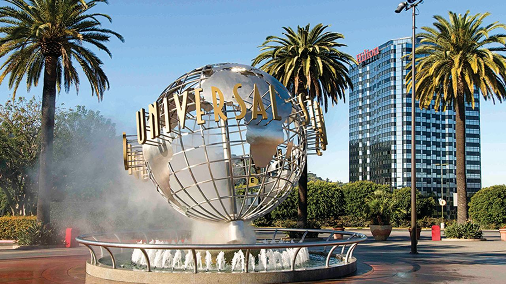
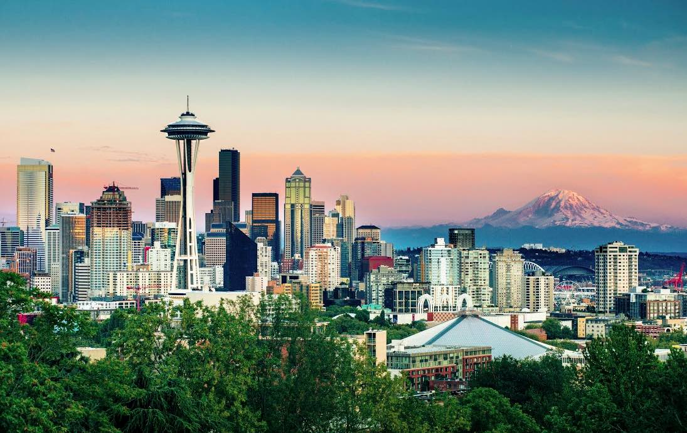

The city of San Francisco is situated at the tip of
a peninsula surrounded by the Pacific Ocean on the
west, the San Francisco Bay on the east, and the
Golden Gate, a narrow marine passageway between San
Francisco and Marin County to the north.
Los Angeles

The City of Los Angeles holds many distinctions.
L.A. is the entertainment capital of the world, a
cultural mecca boasting more than 100 museums, and a
paradise of idyllic weather. From tourist
attractions like the Walk of Fame’s collection of
stars (numbering more than 2,614 and growing by one
or two a month) to career opportunities like those
presented in the expanding tech industry,
Los Angeles is the place to be.
Seattle

Seattle, a city on Puget Sound in the Pacific
Northwest, is surrounded by water, mountains and
evergreen forests, and contains thousands of acres
of parkland. Washington State’s largest city, it’s
home to a large tech industry, with Microsoft and
Amazon headquartered in its metropolitan area. The
futuristic Space Needle, a 1962 World’s Fair legacy,
is its most iconic landmark.
Las Vegas
Las Vegas, in Nevada’s Mojave Desert, is a resort
city famed for its vibrant nightlife, centered
around 24-hour casinos and other entertainment
options. Its main street and focal point is the
Strip, just over 4 miles long. This boulevard is
home to themed hotels with elaborate displays such
as fountains synchronized to music as well as
replicas of an Egyptian pyramid, the Venetian Grand
Canal, and the Eiffel Tower.